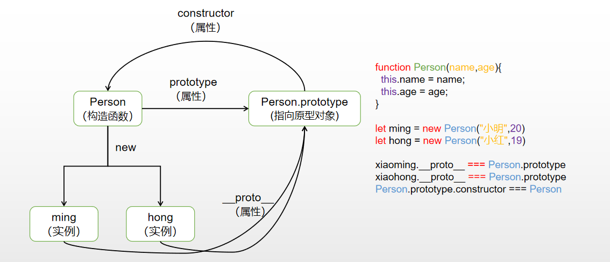
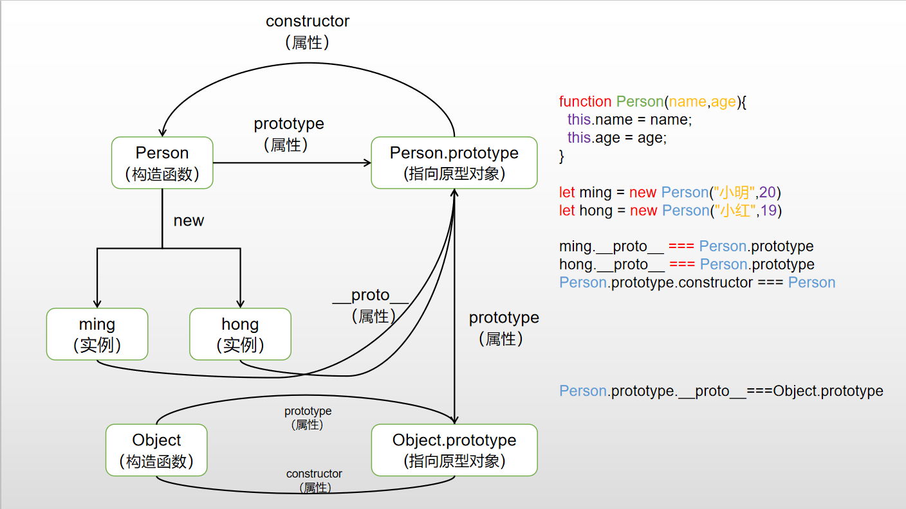

阅读本文你可以了解到(如果你是老手可以暂时忽略)
__proto__和prototype指的是什么假如某些同学没有看过红宝石或者是犀牛书的。这里有一段描述:每一个JavaScript的对象都会对应一个原型对象，并从原型对象上继承属性和方法
当我们创建一个对象的时候
let obj = new Object()
// 当我们打印 obj 的时候
- { }
|- __proto__: Object
控制台显示了我们想要了解的东西__proto__,假如我们展开__proto__里面有很多属性和方法，这些就是存在Object对象上的属性和方法。所以我们可以大胆猜测这个是我们知识储备中，每个JavaScript对象都会对应的原型。
这里又有一个猜测，既然对象又__proto__,那么是不是对象也有prototype呢。当你高高兴兴在输入以后……
console.log(obj.prototype) // undefined
控制台马上当头一棒，没想到输出的是undefined，这也告诉我们，普通对象是没有prototype属性的，那假如普通对象没有prototype，那什么对象才有呢。
这时候我们想到了JavaScript万物皆对象，Function也是对象呀。那是不是prototype是在Function上面呢，再实践一回过后……
function fun(){}
console.log(fun.prototype)
// 这会输出什么呢??
- {constructor: ƒ}
|constructor: ƒ fun()
|__proto__: Object
打印之后，真的有东西出来而不是undefined呀。而且比普通对象不同的是，还有一个constructor属性。这个属性从名字看，好像我们认识的构造函数(构造的意思)实践过后就可以敲黑板做笔记啦
__proto__,每个函数都有的属性是prototype当同学们在控制台上写下console.log("对象")的时候，输出的肯定有__proto__，可能还有该对象上的属性和方法。那为什么每个函数都有prototype呢？当你创建一个函数的时候JavaScript会自动添加prototype属性到函数上。这个属性是一个指针，指向的是一个对象。这个对象有一个属性，是上面打印的constructor属性，这个也是一个指针，指向构造函数。也就是说当你创建一个函数的时候，内部自动会添加上的prototype属性
ps1这里有一个表述的问题。不是prototype是原型对象，是prototype指向的是原型对象，prototype本身是一个指针，指针，指针。
ps2这里的prototype也有特例，通过bind绑定生成的函数是没有prototype属性的
这里说到prototype 是所有实例的共享方法和属性的,举个例子
// 一个简单的构造方法
function Person(name:string,age:number){
this.name = name;
this.age = age;
}
// 函数prototype 指向的是一个对象，一个共享的对象，可以让实例共享
Person.prototype.getName = function(){
// 这里的this，因为是实例共享的，可以简单的理解为指向实例
return this.name
}
// 所以当你 new 两个不同对象的时候
const xiaoming = new Person("小明",20)
const xiaohong = new Person("小红",20)
// 当你都调用getName的时候.....
console.log(xiaoming.getName()) // 小明
console.log(xiaohong.getName()) // 小红
// 是不是自然而然的跟你想的一样呢?
prototype上有一个属性constructor,指向的是构造函数，有了这句话我们可以很快的确定这个表达式铁定正确
Person.prototype.constructor === Person
这里的Person原本就是一个构造函数，加上Person的prototype属性上的constructor就是指向构造函数的。两者结合，答案就是这么简单。
__proto__跟prototype又是怎么联系起来的呢我们继续从实践出发，继续敲下console.log({}),这时出现的东西是我们的老伙伴__proto__了
console.log({})
- { }
|- __proto__: Object
这里的__proto__是我们刚刚说的一个属性，但是我们并不知道他的属性是什么。刚刚我们猜测的是指向的是原型对象，并从原型对象上继承方法。有了上面的实践结果，我们就可以继续验证一下是否正确了。
let obj = {};
obj.__proto__ === Object.prototype // true
控制台上显示的结果是true。这样也验证了我们刚开始的猜想，实例的__proto__指向的是构造这个实例的函数的原型对象。去到这里基本上我们已经清楚了__proto__和prototype之间的关系了。
__proto__和prototypeJavaScript不同于传统强类型语言Java，C++，没有提出类这个概念。JavaScript是通过函数去模拟类，并通过原型去实现构造实例对象。原型你可以这样理解：每一个JavaScript对象(null除外)在创建的时候就会与之关联另一个对象，这个对象就是我们所说的原型，每一个对象都会从原型继承属性。在这里原型就是我们刚刚所说的prototype指向的对象，你可以通过prototype属性去访问。每一个新创建的实例怎么去关联原型呢，答案就是__proto__。实例通过__proto__属性可以找到prototype从而继承属性和方法。这里可以上一张小图可以更加清楚的理解。

原型链字面意思理解，原型之间连接一起来形成一条链就是原型链。恭喜你，你已经理解原型链了。开什么玩笑，就这？取关，退订，double kill。
我们先用一个别的概念来帮助理解原型链。生物学中食物链都听过吧。经典语录之螳螂捕蝉黄雀在后，这就是经典的食物链，螳螂吃蝉，黄雀吃螳螂。食物链是指生态圈中物质和能量转化之间的关系。
那么说回来，原型链又是什么？又到了老师手把手教学实践环节…..
// 原型链 首先得有原型，原型在哪里有呢，函数里面呀
function Person(name,age){
this.name = name;
this.age = age;
}
//我们有原型之后，那么怎么连接起来呢 实例不是有一个属性可以跟原型连接的吗？
let ming = new Person("小明",20)
// 这样链接只是实例与原型的链接呀 那原型与原型怎么链接的呢?
ming.__proto__ === Person.prototype
// 别忘了prototype也是一个对象呀，对象就铁定有 __proto__属性的呀,先别急，打印一下
console.log(Person.prototype.__proto__)
// 同学们看到了不是undefined，是什么呢？没错就是Object.prototype。如果不行的话，那就再来验证一下
console.log(Person.prototype.__proto__ === Object.prototype)
// 是不是返回true呢？ 所以原型就是通过 __proto__这个属性链接起来的
__proto__属性链接起来形成一条原型链既然我们知道原型链是什么，那么原型链的作用又是什么呢？同学们先思考一下
我们以前是不是有这样一个情景，对象原型本身不存在的方法，但是对象也可以使用的情景。例如toString方法是不是每个对象(除了null以外)都可以使用呢？
接下来到了老师引导学生实践环节
// 我们先新建一个函数，照抄一下Person
function Person(name,age){
this.name = name;
this.age = age;
}
// 新建一个对象
let ming = new Person("xiaoming",20)
// 尝试一下执行toString 方法
ming.toString() // "[object Object]"
// 我们Person的原型上没有这个方法呀，但是为什么我们能执行这个方法呢？这个方法是存在哪里的呢？
// 我们打印一下 ming 这个对象
- Person { name:小明，age:20 }
|- __proto__:Object
|- construcotr:ƒ Person(name,age)
|- __proto__:Object
|- ...
|- toString: ƒ toString()
|- ...
去到这里我们发现了toString方法是在Object.prototype上的，我们也可以知道了，ming这个对象调用toString方法的时候调用的是Object原型上的方法。为什么会这样呢。同学们做笔记啦
在这里可以补充一下上面的小图，更加帮助理解

由一段代码引起的问题
// instanceof 运算符是 a 是 b 的实例即 a instanceof b 为 true，默认判断条件就是 b.prototype 在 a 的原型链上。
Function instanceof Object // true
Object instanceof Function // true
这到底是怎么回事呢？到底是谁构造谁？
其实这个问题得慢慢说通，可能得花时间慢慢琢磨
Object.prototype.__proto__ === null // 原型链的顶端，此处不应该有值
// 这里表明 Function的原型对象是由 Object原型构造出来的，所以Function能在原型链上找到Object
Function.prototype.__proto__ === Object.prototype // true
// 但是又因为 Object本身是一个构造函数，既然你跟函数有关系了那铁定有如下关系
Object.__proto__ === Function.prototype // true
// 因为Object在作为构造函数的时候是由Function的原型所构造的，Object能在原型链上找到Function
快乐的一堂课就愉快的结束了，假如有表述错误的地方，欢迎同学们来指出，假如写的好就点波关注